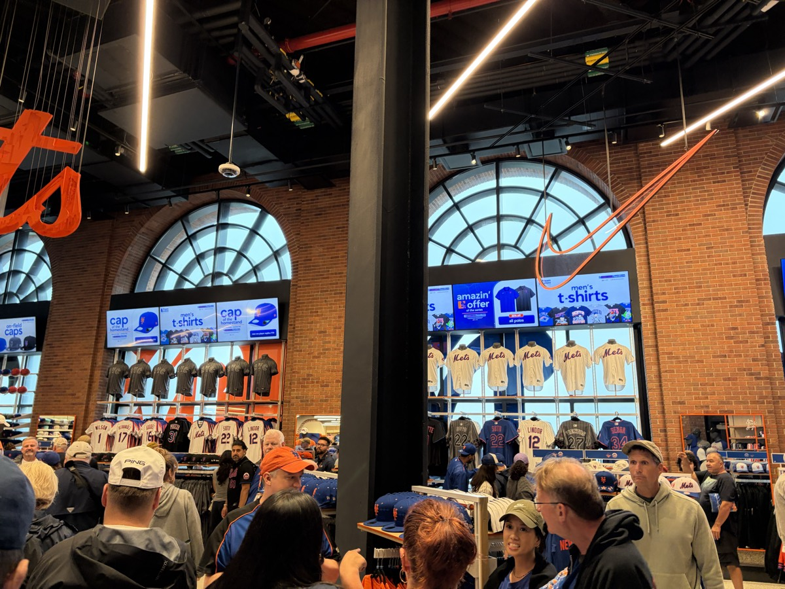

Snapback · a fan's gameday
Your night at the Garden, in order
Follow the photos from the street to your seat — every stop is a real tip from a fan who's been.
1
 Outside
OutsideArrive
Best ways in: walking, the subway, the LIRR, or NJ Transit. Driving would be my last choice.
2
 Gates
GatesGet in
Get in through the 100 level gates — a way shorter merch line than the one in the MSG lobby.
3
 Chase Lounge
Chase LoungePregame
There is a Chase reserve lounge inside the arena. You can reserve a spot pregame.
4
 100 Level
100 LevelYour seat
Front rows in the 200s in the center sections beat behind the basket, even down low. The Hyundai Bridge is a cool spot and good value.
5
 Steak Sandwich
Steak SandwichEat
Best food in MSG is the steak sandwich outside section 107. The Garden Market hamburgers are the best basic food in sports. Skip the pizza.
6
 Tip-off
Tip-offThe crowd
Best crowd in the NBA. Be ready to stand, and the seats are tight — but there's plenty of in-game entertainment and the energy is worth it.
7

Team StoreBefore you leave
Alcoholic drinks are very expensive inside MSG — budget for it. Grab merch through the 100 level gates on the way out.
The verdict
"Best crowd in the NBA. Be ready to stand and the seats are tight, but the energy is worth it. Eat the steak sandwich outside section 107 and the Garden Market hamburgers, and skip the arena pizza. Get in through the 100 level gates for a shorter merch line, and know the alcohol is very expensive."
128
+ 213 more fan reviews